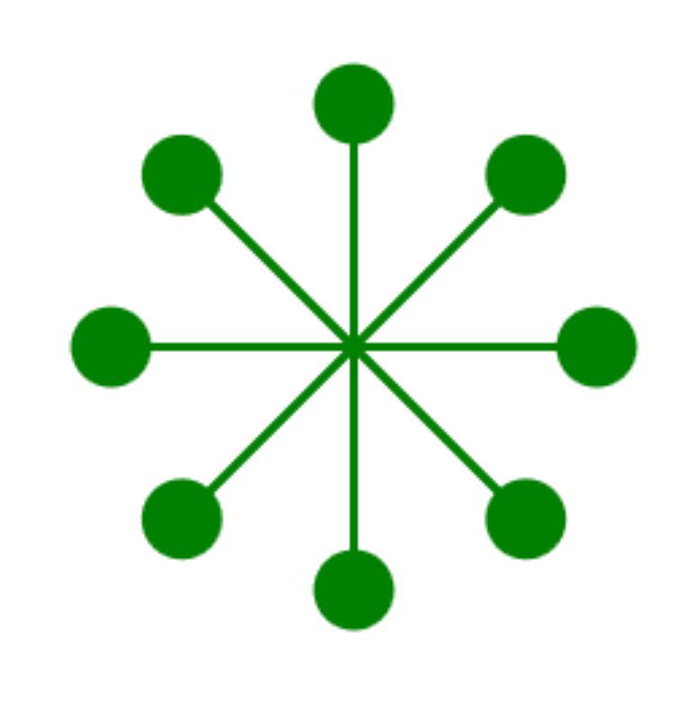

n-Faches Wiederholen mit for-Schleifen
Häufig haben wir beim Programmieren die Situation, dass wir einen gewissen Codeblock, also eine Folge von Anweisungen, genau n-Mal ausführen möchten.
Das ist beispielsweise beim zeichnen eines Quadrats so:
#r "nuget: BulmeSharp, 0.10.1"
using BulmeSharp;
Turtle.fd(50);
Turtle.rt(90);
Turtle.fd(50);
Turtle.rt(90);
Turtle.fd(50);
Turtle.rt(90);
Turtle.fd(50);
Turtle.rt(90);
Turtle.showTurtle();
Die beiden Zeilen Turtle.fd(50); und Turtle.rt(90); werden hier viermal wiederholt.
Das ist umständlich und auch gar nicht nötig, denn wir können
C# anweisen, die zwei Zeilen einfach viermal auszuführen.
Bis jetzt haben wir hierfür die while-Schleife kennengelernt. Wie könnten das Quadrat beispielsweise mit folgendem Code zeichnen:
int i = 0;
while (i < 4)
{
Turtle.fd(50);
Turtle.rt(90);
i++;
}
Turtle.showTurtle();
Diese Schleifenart nennt man auch Zählschleife. Da sie oft verwendet wird, gibt es dafür ein eigenes Konstrukt: die for-Schleife. In diesem Kapitel lernst du die for-Schleife kennen, mit der du Codeblöcke eine festgelegte Anzahl von Malen wiederholen kannst.
Die for-Schleife
Möchten wir einen Codeblock n-Mal ausführen so verwenden wir die for-Schleife. Möchten wir die beiden Zeilen aus dem vorhergegangen Beispiel viermal wiederholen, so schreiben wir:
#r "nuget: BulmeSharp, 0.10.1"
using BulmeSharp;
for (int i = 0; i < 4; i++)
{
Turtle.fd(50);
Turtle.rt(90);
}
Turtle.showTurtle();
Die Variable i ist die Zählvariable, die mitzählt bei welcher Wiederholung wir sind.
⚠️ Vorsicht: die Zählvariable beginnt bei 0 zu zählen,
wie überall in der Informatik üblich.
Deshalb zählt sie bei vier Wiederholungen von 0 bis 3.
üìú Syntax
Die for-Schleife hat von allen bis jetzt bekannten Konstrukten, die komplizierteste Syntax:
for (<Initialisierung>, <Bedingung>, <operation>)
{
Anweisungen, die
solange die bedingung gilt
}
Die drei mit Beistrich getrennten Teile sind:
- Initialisierung: Hier wird die Zählvariable definiert und ein Startwert vergeben. Meistens verwendet man die Kleinbuchstaben
i,jundkfür die Zählvariable. Der Initialisierungsteil könnte beispielsweise lauten:int i = 0 - Bedingung: Die von der While-Schleife bekannte Bedingung. Auch die for-Schleife hat eine solange-Bedingung. Falls eine Schleife bis inkl.
10zählen soll, so muss die Bedingungi <= 10sein. - Operation: Die Veränderung der Zählvariable. Meistens wird die Zählvariable entweder inkrementiert, dekrementiert oder es wird bei jedem Durchlauf ein fixer Wert hinzuaddiert. Beispiele sind:
i++,i--,i += 4oderi *= 2
Damit definiert ist, welche Anweisungen den zu wiederholenden Codeblock bilden, müssen die zu wiederholenden Anweisungen in geschweifte Klammern geschrieben werden.
Beispiel
Um ein regelmäßiges Neuneck zu zeichnen muss die Turtle neunmal geradeaus gehen und sich dann um 40° drehen. Würdest du das alles untereinander schreiben, dann würde das Programm ziemlich lange werden. Hier verwenden wir in Zeile 4 aber die for-Schleife und sagen der Turtle damit, sie soll die zwei eingerückten Funktionsaufrufe in Zeilen 5 und 6 neunmal wiederholen.
#r "nuget: BulmeSharp, 0.10.1"
using BulmeSharp;
for (int i = 0; i < 9; i++)
{
Turtle.fd(50);
Turtle.rt(40);
}
Turtle.showTurtle();
Übungen
üìù Übung 40
 Zeichne die nebenstehende Figur. Dazu brauchst du auch die Funktionen bk() und dot().
üìù Übung 41
Zeichne eine Perlenkette, die aus 18 Perlen (dots) besteht. Zwischen den Perlen muss die Turtle jeweils einige Schritte vorwärts gehen und um einen kleinen Winkel (z.B. 20°) nach links drehen.
üìù Übung 42
 Zeichne die Treppenfigur in der nebenstehenden Abbildung.
Verwende dazu die for-Schleife.
Zeichne die Treppenfigur in der nebenstehenden Abbildung.
Verwende dazu die for-Schleife.
üìù Übung 43
 Zeichne das Pentagramm in der nebenstehenden Abbildung.
Überlege dir zuerst, wie die Drehwinkel lauten
und verwende wieder die for-Schleife um die Figur zu zeichnen.
Zeichne das Pentagramm in der nebenstehenden Abbildung.
Überlege dir zuerst, wie die Drehwinkel lauten
und verwende wieder die for-Schleife um die Figur zu zeichnen.
üìù Übung 44
 Zeichne den Stern in der nebenstehenden Abbildung.
Überlege dir zuerst, welche Teile wiederholt werden
und verwende wieder die for-Schleife um die Figur zu zeichnen.
Zeichne den Stern in der nebenstehenden Abbildung.
Überlege dir zuerst, welche Teile wiederholt werden
und verwende wieder die for-Schleife um die Figur zu zeichnen.
üìù Übung 45
Schreibe ein Programm, bei dem der Benutzer eine Ganzzahl eingeben kann. Gibt der Benutzer die Zahl 3 ein, so wird ein regelmäßiges Dreieck gezeichnet. Gibt der Benutzer die Zahl 4 ein, so wird ein regelmäßiges Viereck gezeichnet, und so weiter.
üìù Übung 46
Schreibe ein Programm, beim der Benutzer eine positive Zahl eingeben muss. Das Programm soll dann in einer for-Schleife alle Teiler der eingegeben Zahl ermitteln und ausgeben.
Beispiel:
- Eingabe: 24
- Ausgabe: 1, 2, 3, 4, 6, 8, 12
üìù Übung 47
Schreibe ein Programm, welches die Quadrate aller Zahlen von 1 bis 20 ausgibt.
Ausgabe: 1, 4, 9, 16, ...., 361, 400
üß≠ Zusammenfassung
Mit for i in range(anzahl): gibst du der Turtle
an, sie soll einen oder mehrere Anweisungen anzahl-mal wiederholen,
bevor sie mit neuen Anweisungen weitermacht.
Alles, was wiederholt werden soll, muss unter repeat stehen und eingerückt sein.
for (int i = 0; i < n; i++)
{
Anweisungen die n-Mal
wiederholt werden sollen
}